- 親子丼
- 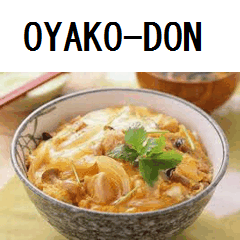親子丼
550円
- 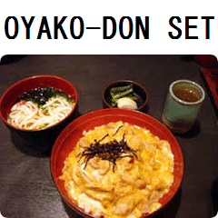親子丼セット
690円
- カツ丼
- 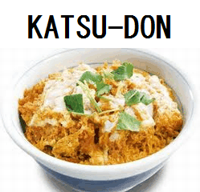カツ丼
550円
- 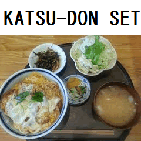カツ丼セット
690円
- 天丼
- 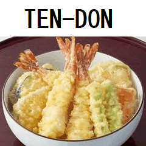天丼
600円
- 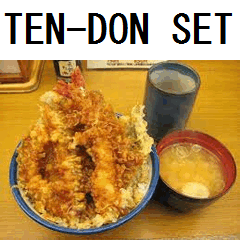天丼セット
790円
- セット
- セットには、お味噌汁と
つけものがつきます。
メニューTOPに戻る
Copyright © 駅前食堂
- うどん
- 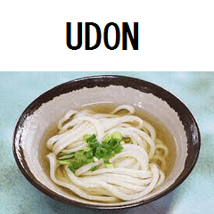うどん
300円
- 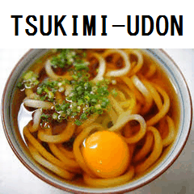月見うどん
400円
- きつねうどん
400円
- 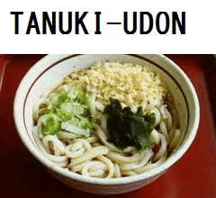たぬきうどん
400円
- そば
- 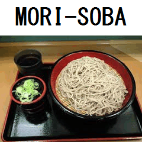もりそば
300円
- 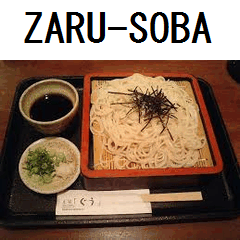ざるそば
400円
- 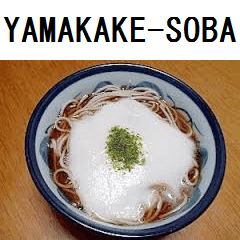山かけそば
450円
- プラスメニュー
 おにぎり
おにぎり
120円- 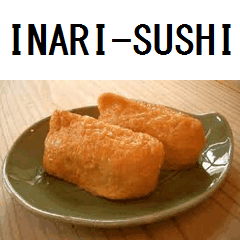おいなり
120円
- 大盛り
+50円
メニューTOPに戻る
Copyright © 駅前食堂
- おさしみ
- 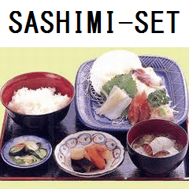おさしみ定食
1250円
- てんぷら
- 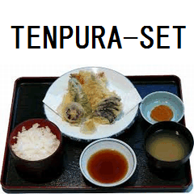天ぷら定食
1150円
メニューTOPに戻る
Copyright © 駅前食堂
- かき氷
- いちご
300円
- メロン
300円
- いちごミルク
300円
- 宇治金時
330円
- 他
- 杏仁豆腐
300円
- パフェ
550円
- 豪華大盛り特性パフェ
890円
メニューTOPに戻る
Copyright © 駅前食堂
- ソフト・ドリンク
- オレンジジュース
300円
- ファンタ
150円
- ビール
- グラス
320円
- 中ジョッキ
520円
- 中瓶
520円
メニューTOPに戻る
Copyright © 駅前食堂